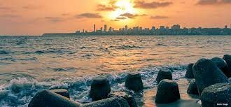
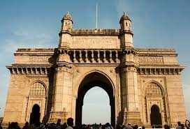
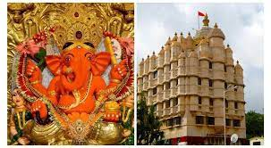
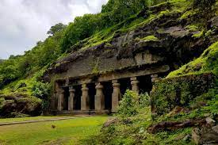

often called the "City of Dreams," is like a buzzing beehive of excitement and opportunity. It's where tall skyscrapers reach for the sky, bustling streets are filled with people from all over the world, and the air is charged with the energy of dreams coming true. Known as the heart of India's financial world, Mumbai is where big businesses thrive and fortunes are made. But it's not just about work; Mumbai is also the beating heart of India's vibrant culture. From the glitz and glamour of Bollywood to the mouthwatering aromas of street food, there's always something new to discover around every corner. And let's not forget about the city's breathtaking landmarks, like the majestic Gateway of India standing proud against the Arabian Sea. Mumbai isn't just a city; it's a symphony of sights, sounds, and sensations that will leave you enchanted and wanting more. Mumbai is the birthplace of Bollywood, India's famed film industry. It's where dreams come alive on the silver screen, and stars are born. The city's film studios, like Film City, are bustling hubs of creativity and entertainment, where iconic movies are made and legends are created. Mumbai is a melting pot of cultures, and each neighborhood has its own unique flavor. From the glitzy skyscrapers of South Mumbai to the vibrant markets of Dadar and the hipster cafes of Bandra, there's something for everyone in Mumbai's diverse tapestry of communities. In essence, Mumbai is a city of contrasts and contradictions, where tradition meets modernity, and dreams collide with reality. It's a place that captures the imagination and leaves an indelible mark on all who visit, making it one of the most vibrant and captivating cities in the world.
To Choose PG:
Click Here